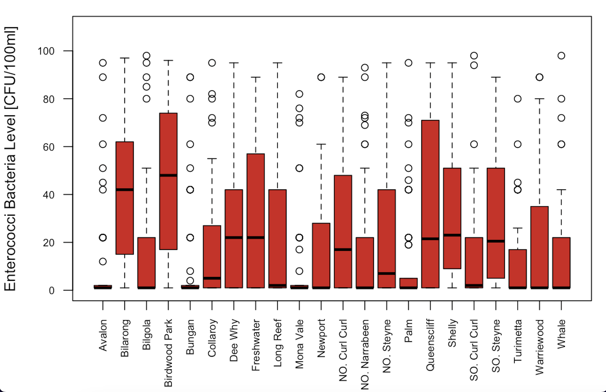
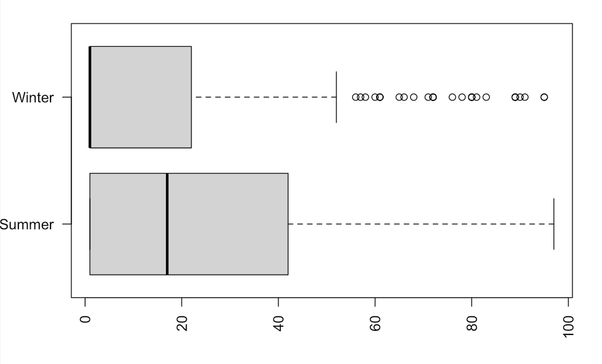

Enterococci bacteria levels in the water of Sydney Northern Beaches during the year 2018
This project aims to investigate the differences in Enterococci levels at Sydney's Northern Beaches. This analysis will help individuals make their decisions about when and where to swim. It will also help to investigate community concerns surrounding potential fecal or other sewage contamination in polluted water.
Details
The Enterococci bacteria data of Sydney Northern Beaches were collected under the Beachwatch Water Quality Program and recorded by the NSW Government Office of Environment and Heritage. Enterococci bacteria are rarely present in clean water, and it mostly appears due to the presence of fecal material by humans or animals. This type of bacteria has been linked to several diseases affecting humans' overall health. Moreover, It is negatively affecting sports lovers and the economic value of the aquatic resources. This project provides an assessment of Enterococci bacterial level in the water, how suitable each site is for swimming and the impact of seasonal changes during the year 2018.
After examining all sites and by comparing the box plot's medians and IQR’s, we discovered that the lowest Enterococci level was at Avalon and Mona Vale beaches and the highest at Birdwood Park. We also found high fecal contamination during summer and autumn, whereas low fecal contamination was during winter and spring. However, after carrying out statistical tests, we proved no significant impact of seasonal variation on Enterococci levels.
Data plots

Enterococci levels for all swimming sites in the Northern Beaches regions

Enterococci levels during the summer and winter of 2018